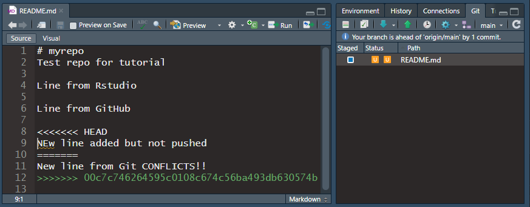

2 Using Git and GitHub
2.1 Tour of GitHub repository
https://github.com/LandSciTech/caribouMetrics
2.1.1 Code
- Top folder of repo.
- Acts as landing page.
- Displays the readme file.
2.1.2 File on GitHub
- Can view and edit code on GitHub.
- Can see what has changed over time.
- History shows all commits that have affected the file.
- Blame shows for each line, who last edited, when, and the commit message.
2.1.3 Viewing a commit
- Shows all files changed and highlights which parts changed.
- Works for images too!

2.1.4 Issues
A place for tracking things that need to get done or reporting bugs or unexpected results.
- Can be submitted by anyone with access to the repo.
- Once they are dealt with they can be closed but are still kept.
- If you are reporting a bug it is key to have a minimum reproducible example so others can see what you are seeing and try to help.
- anywhere else on GitHub if you type # and then the issue number it will automatically link to the issue. In a commit message this will link the commit to the issue so you can see what was changed to address it. Example here.
- Issues can also be used for To-do lists or project planning and can be tagged with a certain category or assigned to specific users.
2.1.5 Settings
Repository options and settings. There are a lot of complex options but the most beginner relevant are:
- Changing repository visibility: Bottom of General section, usually changing to public once far enough along
- Deleting repository: Bottom of General section, no going back, consider archiving if it is just out of date
- Adding collaborators: under Access > Collaborators and teams, click add people and type their GitHub user name. Only needed for private repositories
2.1.6 GitHub Organiztions
- You can create an organization to group repos together and manage collaborators. For example:
- https://github.com/LandSciTech
- https://github.com/PredictiveEcology
- https://github.com/na-pops
2.2 Daily Git Usage
2.2.1 When to commit
- Often!
- But not too often!
- Use “Amend previous commit” checkbox when you want to make sure to commit but aren’t sure you are done yet
- Try to make each commit distinct and accomplish one thing. eg:
Make data cleaning scriptCreate exploratory plotsFix bug in data cleaning handling of datesUpdate exploratory plots with dates
2.2.2 What to commit
- All source code:
- Git can track any file but it does a better job with raw text files (eg: .R, .Rmd, .html, .md, .py, .sh, .txt, .csv, .tsv).
- Data stored in text files can be committed and this will track changes to the data over time.
- For other files like word docs or pdfs git can’t track the content and tracks the whole file every time you make a change. If the file is generated by a text file (eg a pdf generated from a .Rmd) then don’t commit the file because it can be re-created by running the code. It is also okay to commit a file that won’t change often but you want users to have when they clone the repo.
- Except!:
- Nothing sensitive ie passwords, keys etc (you can have a private repo if you are not ready to share code with the world but still don’t store passwords)
- Probably not large datasets. Ideally these would be downloaded from a shared location programatically in the code. For example this [data prep script](https://github.com/LandSciTech/MissisaBooPaper/blob/main/scripts/1_dataPrep.R).
- .gitignore: a file at the top level of git repo that tells git what not to track.
- Uses regular expressions to match file or folder names or types.
- Example file: https://github.com/LandSciTech/caribouMetrics/blob/master/.gitignore
2.2.3 When to push
- Fairly often. If you are working alone pushing is a way to back up your files. If you are collaborating it is a way to make your work available to others. If you don’t push and then a collaborator makes changes to the same file it gets a bit tricky (but fixable).
- Once you push you can’t use the “Amend previous commit” trick
- If you find yourself reluctant to push because you aren’t ready for others to use your work consider making a branch (see below)
2.2.4 When to pull
- Ideally every day, or when a collaborator lets you know they pushed
- Pulling often prevents getting out of sync with collaborators
- Before pulling be sure to commit all your local work
- Good practice to pull before pushing but git will normally warn you if you forget.
2.2.5 Merge conflicts in Push/Pull
- If a collaborator pushed their changes after you last pulled you will need to pull before you can push. If your changes don’t conflict git will automatically merge their changes with yours.
- Merge conflicts: when a collaborator made changes that overlap your changes. Git can’t automatically fit them together you have to review and pick the part to keep.
2.2.6 Resolving merge conflicts
This is a typical scenario with a merge conflict: “Ah! I pulled at the start of the day but then a collaborator pushed a change to the same line and now when I try to push it says I have to pull first.”
“And then when I pull I get merge conflicts!”

Not too hard to fix. Go through each file that has the orange U in the Git pane. Find the location of the conflict. HEAD is your local version and the alphanumeric string is the commit id for the remote version that conflicts. Pick the one you want and delete all the marker lines (<<<, === and >>>). Then commit and continue on with your work.
2.2.7 Avoiding merge conflicts
- Pull regularly
- Keep in touch with collaborators so you are not working on the same lines at the same time.
- Use a branch
2.2.8 Philosophy
Don’t get too hung up on using Git perfectly! There is a lot of talk out there about keeping a clean and linear commit history but I don’t worry about this. We are not working on large enterprise software teams. For the most part focus on keeping the process simple for yourself so that you actually do it. The main things are commit often, with clear commit messages and push and pull often so that you don’t get too far out of sync with collaborators. The other concern I hear often is not wanting others to see your messy process. Try not to worry about this, no one cares enough to read through your closed issues and entire commit history. Besides it is part of the beauty of open source development for others to see the finished product but also the process of creating it.
2.3 Tools for Collaboration
2.3.1 Write good code
Writing good code with a consistent style, literate naming and comments to explain decisions goes a long way to improving collaboration. It is also required that your code runs on your collaborators computer without significant modifications. See the rResources page for some ideas on how to write good code.
2.3.2 Branches
- A stream of commits that diverges from the main stream until it is ready to re-join.
- Helpful for starting a new version of something while making sure others can keep using the old version
- Example we want to convert some functions used in a paper to become an R package but Josie is working on writing the paper and needs the old version to keep working. I make a branch where I re-arrange everything into a package. If Josie makes changes to the main branch that affect the functions I can see those and merge them into my branch.
2.3.2.1 Make a new branch in RStudio
- Click New Branch in the Git pane
- Give it a name using dashes or underscores for spaces and no special characters. The “Remote” is the GitHub version of the repository, almost always leave the default. “Sync branch with remote” will also create the branch on GitHub which we typically want. Click “Create”
- Make a change, save, commit and push as usual.
- To change back to the main branch click the dropdown beside the “New Branch” button and under “Local Branches” select “main”. In git this is called “checking out” the branch.
2.3.2.2 Merge the branch back into main with a Pull Request
- Once you are ready to incorporate the changes in your branch back into the main code stream you “merge” your branch with the main branch.
- The easiest way to do that is on GitHub. Once you have made commits on your branch and pushed, go to the repo on GitHub
- On the GitHub repo page select the new branch from the drop down, then click Contribute > Open pull request
- You can give the pull request a descriptive name and add comments to explain what your are trying to do or link to issues that are being addressed. Then create the pull request.
- The pull request (PR) is a page that summarizes the changes you propose to make to the main branch. It includes the list of commits in the branch since it diverged from main and the diffs for files that have changed. Collaborators can leave comments on the PR and discuss it or add new commits before it is merged.
- PRs are the main way you can contribute to open source projects, and in that case the owner of the project will get the final decision whether to merge your changes into the main branch.
- If there are no merge conflicts and you have the authority to commit to the repos main branch you can click “Merge pull request” to merge your branch with main branch. Then you can delete the branch if it is no longer needed. On your local Rstudio session you will need to change back to the main branch and pull so that the changes are reflected in your local copy of the main branch.
- Branches don’t really prevent merge conflicts. But they do allow you to decide when you want to deal with reconciling your branch and the main branch so you can be more intentional about it. If the same parts of the code are changed in the main branch and your new branch you have to decide manually which one to keep by resolving the merge conflicts as described above. GitHub provides an editor to resolve conflicts online. In some situations the conflicts are too complex to resolve online and the merge must be done from the command line. GitHub provides instructions if this happens.
2.3.2.3 Merge changes from main into your branch
- Sometimes changes are made in main (or any other branch) that you want to include in your branch without incorporating the changes in your branch into main
- To do this you merge the main branch with yours. On GitHub if you go to your branch and click the “This branch is x commits behind main” url it will open a PR for merging main into your branch.
- A PR is often unnecessary for merging main into your branch, because most times your collaborators don’t need to know about it. To avoid this you can use the command line to do the merge.
- In RStudio on the Console pane click the Terminal tab. This will open a command line where you can type git commands.
- Make sure you are in your branch that you want to merge into. Then type:
git merge main
- See https://happygitwithr.com/git-branches.html##git-branches for how to manage branches with the command line but it can also be done through the Rstudio IDE and GitHub for the most part.
2.3.3 Forks
A fork is a copy of another repository which is used to contribute to an open source project that you do not have permission to edit, or to simply make a copy and edit as you wish from there but with an acknowledgement that you used another repo as a starting point.
you can create a fork on GitHub by clicking the fork button in the top right of all GitHub repos or with the usethis command below which will also set up useful default settings. See here for more details.
usethis::create_from_github(
"https://github.com/OWNER/REPO",
destdir = "~/path/to/where/you/want/the/local/repo/",
fork = TRUE
)2.4 Git Terminology Summary 2
- Merge: Combine two versions of a file. These can be the local and GitHub (remote) copies or two different branches.
- Conflict: When merging can’t be done automatically because two versions of the code have edited the same part of a file.
- Branch: A copy of the code that you want to keep separate from the main code at least for a time.
- Pull request: A special GitHub page that shows what will be added to the main branch when another branch is merged.
- Fork: A copy of a repository that you don’t own. Used for contributing to open source projects.